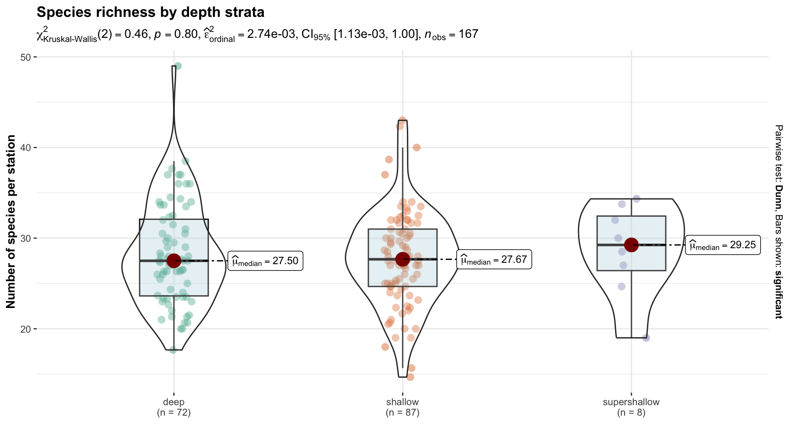
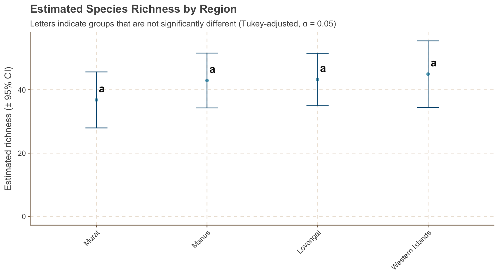
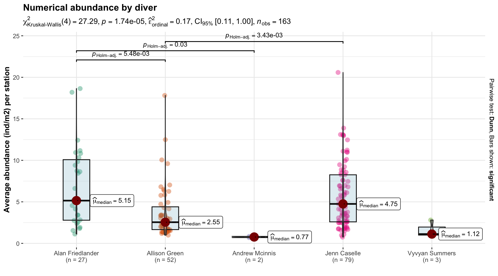
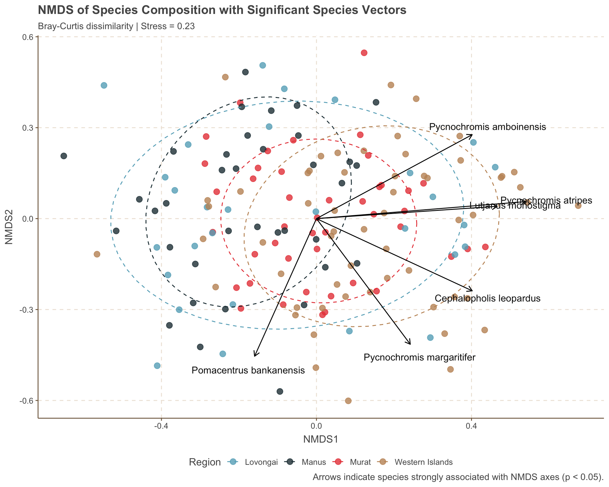

This document presents an exploratory analysis of fish survey data collected during the PNG-2024 scientific expedition. Our goal is to characterize patterns in reef fish community structure and composition, and to identify key drivers of species richness, abundance, and biomass across spatial and ecological gradients.
The dataset comprises standardized underwater visual survey (UVS) data collected across multiple islands, regions, and depth strata using consistent belt transect methods. Observers recorded individual fish counts, estimated lengths, and species-level taxonomic identifications. These were used to derive metrics of abundance (individuals per m²), biomass (grams per m²), and species richness per station.
stations |>group_by(region, habitat, depth_strata) |>summarise(n =n_distinct(ps_station_id), .groups ="drop") |>pivot_wider(names_from = habitat, values_from = n, values_fill =0) |>mutate(Total =rowSums(across(where(is.numeric)), na.rm =TRUE)) |>gt(groupname_col ="region") |>tab_header(title ="Summary of sampling effort by region",subtitle ="Number of stations surveyed by depth strata and habitat") |>tab_spanner(label ="Reef Habitats", columns =c("fore_reef", "back_reef", "channel", "patch_reef")) |>tab_style(style =list(cell_fill(color ="#f0f0f0"),cell_text(weight ="bold")),locations =list(cells_column_labels(everything()),cells_column_spanners(spanners ="Reef Habitats"))) |>opt_table_font(font =list(gt::google_font("Roboto"), default_fonts())) |>opt_row_striping() |>tab_options(row_group.as_column = T,table.width =pct(100),table.font.size ="small") |>opt_vertical_padding(scale =0.7) |>tab_source_note(source_note ="Depth stratum: supershallow (< 6 m), shallow (7 - 15 m), and deep (>= 15 m).")
Table 1: Number of fish survey stations by habitat and depth strata
Summary of sampling effort by region
Number of stations surveyed by depth strata and habitat
depth_strata
Reef Habitats
Total
fore_reef
back_reef
channel
patch_reef
Lovongai
shallow
16
3
0
0
19
deep
9
0
0
0
9
supershallow
1
0
0
0
1
Manus
shallow
15
0
1
1
17
supershallow
2
0
1
1
4
deep
13
0
0
2
15
Murat
deep
22
0
0
0
22
shallow
22
0
0
0
22
Western Islands
deep
25
1
0
0
26
shallow
27
2
0
0
29
supershallow
1
2
0
0
3
Depth stratum: supershallow (< 6 m), shallow (7 - 15 m), and deep (>= 15 m).
Subsequent sections will summarize the data by region and subregion, characterize the dominant taxa, evaluate sampling sufficiency, and explore spatial and ecological drivers of richness, abundance, biomass, and community structure.
2 Summary
2.1 Regional summary
The tables below (Table 2, Table 3) summarize survey coverage and observed patterns in species richness and abundance across regions and subregions. Metrics include the number of stations surveyed, total fish counted, and average richness, abundance, and biomass per station.
These summaries reveal distinct regional patterns in reef fish communities. Lovongai recorded the highest species richness and the greatest average fish biomass per station. In contrast, Murat exhibited the lowest richness and biomass. The Western Islands showed the highest fish abundance, but average biomass per station was comparable to Murat, suggesting smaller-bodied species dominate. Manus had the lowest overall abundance.
In the following sections, we explore spatial and ecological patterns in species richness, abundance, and biomass, focusing on variation across region, depth strata, and observer.
During the expedition, we recorded a total of 114,832 individual fish across 445 distinct taxa during standardized transect surveys. Species richness varied across regions with Lovongai exhibiting the highest number of taxa (326 species), followed by the Western Islands and Manus. Murat showed the lowest regional richness, with only 275 species observed.
Code
library(highcharter)lvl_opts <-list(list(level =1,borderWidth =0,borderColor ="transparent",dataLabels =list(enabled =TRUE,align ="left",verticalAlign ="top",style =list(fontSize ="12px", textOutline =FALSE,color ="#FFFCF9",fontWeight ="bold"))),list(level =2,borderWidth =0,borderColor ="transparent",colorVariation =list(key ="brightness", to =0.250),dataLabels =list(enabled =FALSE),style =list(fontSize ="9px",textOutline =FALSE, color ="#FFFCF9", fontWeight ="bold")))hc_data <- taxa_summary |>mutate(n =1) |>mutate_if(is.numeric, round,2) |>data_to_hierarchical(c(order, family), n)diversity_treemap <-hchart(hc_data,type ="treemap",allowDrillToNode =TRUE,levels = lvl_opts,tooltip =list(valueDecimals =FALSE)) |>hc_chart(style =list(fontFamily ="Roboto")) |>hc_title(text ="Number of fish species by order and family",align ="left",style =list(fontFamily ="Roboto", fontSize ="22px")) |>hc_size(height =500)diversity_treemap
Figure 2: Number of fish species by order and family
The most taxonomically rich families in our surveys were Labridae (wrasses, n = 79), and Pomacentridae (surgeonfishes, n = 78), followed by Chaetodontidae (butterflyfishes, n = 35) ,Acanthuridae (surgeonfishes, n = 32) and Scaridae (parrotfishes, 31) (Table 4)
Code
# Custom theme based on nytimes but with normal header casingcustom_tbl_theme <-reactableTheme(backgroundColor ="#ffffff",borderColor ="#e0e0e0",stripedColor ="#f9f9f9",highlightColor ="#f0f0f0",cellPadding ="2px",style =list(fontFamily ="Roboto", fontSize ="13px"),headerStyle =list(background ="#efefef",fontWeight ="bold",fontSize ="13px",textTransform ="none", # <- disables all capscolor ="black"))# Prepare datafamily_summary_tbl <- family_summary |>mutate(`Taxa Observed`= n_taxa,`Total Count`= total_count,`Avg. Count`=round(avg_count, 2),`Freq. Occurrence (%)`=round(freq_obs, 1),`Avg. Density (ind/m²)`=round(avg_density_m2, 4),`Avg. Biomass (g/m²)`=round(avg_biomass_gm2, 4)) |>select(order, family, `Taxa Observed`, `Total Count`, `Avg. Count`, `Freq. Occurrence (%)`, `Avg. Density (ind/m²)`, `Avg. Biomass (g/m²)`)# Build tablereactable(family_summary_tbl,filterable =TRUE,pagination =TRUE,defaultPageSize =10,striped =TRUE,highlight =TRUE,defaultSorted =list(`Taxa Observed`="desc"),theme = custom_tbl_theme,columns =list(order =colDef(name ="Order", minWidth =150),family =colDef(name ="Family", minWidth =150),`Freq. Occurrence (%)`=colDef(cell =function(value) paste0(value, "%"), align ="center"),`Avg. Biomass (g/m²)`=colDef(cell =function(value) comma(value, accuracy =0.001)),`Avg. Density (ind/m²)`=colDef(cell =function(value) comma(value, accuracy =0.001)))) |>add_title("Fish Families") |>add_subtitle("Summary of fish families observed during the expedition",font_size =20,font_color ='#666666',margin = reactablefmtr::margin(t=10,r=0,b=15,l=0))
Table 4: Summary of fish families observed during the expedition
Fish Families
Summary of fish families observed during the expedition
Some of the most commonly encountered species includede the bluestreak cleaner wrasse (Labroides dimidiatus, observed at 87% of stations), twospot surgeonfish (Ctenochaetus binotatus, 76%), and bicolor chromis (Pycnochromis margaritifer, 75%)(Table 5). These species were widespread across depth strata and regions.
In terms of numerical abundance, the most dominant taxa were the ternate chromis (Chromis ternatensis, 0.84 ind/m²), bicolor chromis (P. margaritifer, 0.73 ind/m²), and the darkfin chromis (Pycnochromis atripes, 0.43 ind/m²).
Biomass was dominated by larger-bodied taxa such as the sleek unicornfish (Naso hexacanthus, 25 g/m²), bigeye trevally (Caranx sexfasciatus, 22 g/m²), and rainbow runner (Elagatis bipinnulata, 17 g/m²), all of which contributed significantly to overall fish biomass despite lower numerical abundance.
We explore differences in community composition across regions in the next sections.
Code
# Prepare datataxa_summary_tbl <- taxa_summary |>rename(`Avg. length (cm)`= avg_length_cm,`Total count`= total_count,`Accepted name`= accepted_name,`Trophic group`= trophic_group) |>mutate(`Length range (cm)`=paste0(min_length_cm, "–", max_length_cm),`Avg. count`=round(avg_count, 2),`Freq. occurrence (%)`=round(freq_obs, 1),`Avg. Density (ind/m²)`=round(density_m2, 4),`Avg. Biomass (g/m²)`=round(biomass_gm2, 4)) |>select(family, `Accepted name`, `Trophic group`, `Length range (cm)`, `Avg. length (cm)`,`Total count`, `Avg. count`, `Freq. occurrence (%)`,`Avg. Density (ind/m²)`, `Avg. Biomass (g/m²)`)# Build interactive tablereactable(taxa_summary_tbl,filterable =TRUE,pagination =TRUE,defaultPageSize =10,striped =TRUE,highlight =TRUE,defaultSorted =list(`Total count`="desc"),theme = custom_tbl_theme,columns =list(family =colDef(name ="Family", minWidth =150),`Accepted name`=colDef(name ="Accepted name",cell =function(value) htmltools::tags$i(value),minWidth =180),`Freq. occurrence (%)`=colDef(cell =function(value) paste0(value, "%"), align ="center"),`Avg. Biomass (g/m²)`=colDef(cell =function(value) comma(value, accuracy =0.001)),`Avg. Density (ind/m²)`=colDef(cell =function(value) comma(value, accuracy =0.001)))) |>add_title("Fish species") |>add_subtitle("Summary of fish species observed during the expedition",font_size =20,font_color ="#666666",margin = reactablefmtr::margin(t =10, r =0, b =15, l =0))
Table 5: Summary of fish species observed during the expedition
Fish species
Summary of fish species observed during the expedition
3 Species Richness
3.0.0.1 Did we sample enough?
To assess the completeness of our species inventories across regions, we generated species accumulation curves using stations as the sampling unit (Figure 3). These curves provide insight into whether our sampling effort was adequate to capture the underlying diversity in each region. They also help evaluate whether observed differences in species richness reflect genuine ecological patterns or are potentially driven by differences in survey effort or sampling completeness.
Code
library(vegan)# Species matrix with one row per transectbiomass_by_transect_and_taxa <- observations |>mutate(ps_transect_id =paste(ps_station_id, diver, station_label, transect, sep ="_")) |>group_by(ps_station_id, diver, station_label, transect, ps_transect_id, accepted_name, accepted_aphia_id, rank, family, trophic_group) |>summarize(sum_length_count =sum(length_cm * count, na.rm =TRUE),min_length =min(length_cm, na.rm =TRUE),max_length =max(length_cm, na.rm =TRUE),across(c(count, biomass_g, biomass_gm2, density_m2), \(x) sum(x, na.rm =TRUE)),.groups ="drop") |>left_join(stations |>distinct(ps_station_id, region),by ="ps_station_id")spp_matrix <- biomass_by_transect_and_taxa |>select(region, ps_transect_id, accepted_name, count) |>pivot_wider(names_from = accepted_name, values_from = count, values_fill =0) |>distinct(ps_transect_id, .keep_all =TRUE) |># Keep one row per stationnest(data =-region)# 2. Species accumulation per regionaccum_curves <- spp_matrix |>mutate(acc =map(data, ~specaccum(select(.x, where(is.numeric)), method ="random")),curve =map(acc, ~tibble(transect = .x$sites,richness = .x$richness,sd = .x$sd))) |>select(region, curve) |>unnest(curve)# 3. Plotggplot(accum_curves, aes(x = transect, y = richness, color = region, fill = region)) +geom_line(linewidth =1) +geom_ribbon(aes(ymin = richness - sd, ymax = richness + sd), alpha =0.2, color =NA) +labs(title ="Species Accumulation Curves by Region",x ="Number of Transects",y ="Accumulated Species Richness") +theme(legend.position ="bottom")+labs(fill ="", col ="")
Figure 3: Species accumulation curves by region
Lovongai reaches the highest species richness, exceeding 320 species, followed by Manus (310) and Western Islands with 292 species, while Murat consistently shows the lowest richness at 275 species. The narrowing confidence intervals with increased sampling suggest stable and reliable richness estimates at higher transect numbers, revealing clear regional differences in biodiversity.
3.0.0.2 Differences across depth strata, divers, and regions?
Let look at some initial exploratory plots of species richness by depth strata, diver, and region.
ggstatsplot::ggbetweenstats(data = stations, x = region, y = avg_taxa, mean.ci =TRUE,pairwise.comparisons =TRUE,p.adjust.method ="holm",type ="nonparametric",title ="Species richness by region", xlab ="", ylab ="Number of species per transect")
Figure 4: Species richnnes by region
Code
ggstatsplot::ggbetweenstats(data = stations, x = depth_strata, y = avg_taxa, mean.ci =TRUE,pairwise.comparisons =TRUE,p.adjust.method ="holm",type ="nonparametric",title ="Species richness by depth strata", xlab ="", ylab ="Number of species per station")

Figure 5: Species richnnes by depth strata
Code
stations |>filter(!str_detect(divers, "\\|")) |> ggstatsplot::ggbetweenstats(x = divers, y = avg_taxa, mean.ci =TRUE,pairwise.comparisons =TRUE,p.adjust.method ="holm",type ="nonparametric",title ="Species richness by diver", xlab ="", ylab ="Number of species per transect")
Figure 6: Species richnnes by diver
Code
p <-ggplot(stations, aes(x =factor(region), y = avg_taxa, fill =factor(region))) +stat_halfeye(adjust =0.3,justification =-0.12,.width =0,point_colour =NA,show.legend =FALSE,alpha =0.3,slab_color =NA) +geom_boxplot(width =0.12,outlier.shape =NA,alpha =0.5,show.legend =FALSE,color ="black") +stat_dots(side ="left",justification =1.1,binwidth =0.4,dotsize =0.7,alpha =0.6,show.legend =FALSE) +stat_summary(fun = median,geom ="text",aes(label =number(..y.., accuracy =0.1)),hjust =-0.2,size =3,color ="black") +coord_flip() +scale_fill_brewer(palette ="Set2") +labs(y ="# taxa per transect",title =paste("Species richness by region"),subtitle ="Average number of species recorded per transect",x ="", fill ="", color ="") +theme_minimal(base_size =13) +theme(panel.grid.major.y =element_blank(),legend.position ="none",plot.title =element_text(face ="bold", size =14),plot.title.position ="plot",axis.text.y =element_text(size =12),axis.text.x =element_text(size =11))ggsave(plot = p, file.path(exp_path, "figures/uvs_fish_richness_by_region.pdf"), width =10, height =8)
To investigate the drivers of species richness across stations, we fit a linear mixed-effects model with region, depth, diver, and sampling effort as predictors, accounting for repeated observations within sites (Table 6).
The species richness model revealed strong observer effects (χ² = 8.8, p < 0.001) and modest but statistically significant differences across regions (χ² = 3.3, p = 0.024). Sampling effort (χ² = 42.9, p < 0.001) was, as expected, a major predictor of richness—indicating that increasing the number of transects substantially boosts the number of species detected. In contrast, depth strata had no discernible effect on richness (χ² = 0.08, p = 0.92).
Key findings:
Sampling effort: Richness increased strongly with the number of transects (β = 13.91, p < 0.001), confirming the expected positive relationship between effort and species detection.
Observer effect: Diver identity was the strongest predictor of species richness after sampling effort. Compared to Alan Friedlander (reference):
Allison Green recorded ~12 fewer species per station on average (β = –12.10, p < 0.001),
Jenn Caselle recorded ~7 fewer species (β = –6.94, p = 0.072),
Estimated marginal means show the highest richness for Friedlander (58.0 spp), followed by Caselle (51.1), Green (45.9), McKinnis (43.1), and Summers (40.3).
Pairwise contrasts confirmed statistically significant differences between Friedlander and both Green (p < 0.001) and Summers (p = 0.028).
Regional differences: Species richness was modestly influenced by region (χ² = 3.3, p = 0.024).
Estimated marginal means indicate lower richness in Murat (41.4 spp) compared to Lovongai (48.3), Manus (48.3), and the Western Islands (48.4).
The pairwise difference between Murat and Western Islands approached significance (p = 0.055), suggesting a possible regional signal.
spp_model_emm_region |>cld(adjust ="tukey", Letters = letters, alpha =0.05) |>ggplot(aes(x =reorder(region, emmean), y = emmean))+geom_point()+geom_errorbar(aes(ymin = lower.CL, ymax = upper.CL), width =0.2, color ="#065A82")+geom_text(aes(label = .group), vjust =-1, hjust =0.05, size =5, fontface ="bold")+labs(title ="Estimated Species Richness by Region",subtitle ="Letters indicate groups that are not significantly different (Tukey-adjusted, α = 0.05)",x =NULL,y ="Estimated richness (± 95% CI)") +expand_limits(y =0)+theme(axis.text.x =element_text(angle =45, hjust =1))

Figure 7: Estimated marginal means of species richness by region, adjusted for differences in sampling effort, depth strata, and region (± 95% CI). Letters indicate statistically distinct groups based on Tukey-adjusted pairwise comparisons
Code
spp_model_emm_diver |>cld(adjust ="tukey", Letters = letters, alpha =0.05) |>ggplot(aes(x =reorder(divers, emmean), y = emmean))+geom_point()+geom_errorbar(aes(ymin = lower.CL, ymax = upper.CL), width =0.2, color ="#F08A4B")+geom_text(aes(label = .group), vjust =-1, size =5, fontface ="bold")+labs(title ="Estimated Species Richness by Diver",subtitle ="Letters indicate groups that are not significantly different (Tukey-adjusted, α = 0.05)",x =NULL,y ="Estimated richness (± 95% CI)") +expand_limits(y =0)+theme(axis.text.x =element_text(angle =45, hjust =1))
Figure 8: Estimated marginal means of species richness by diver, adjusted for differences in sampling effort, depth strata, and region (± 95% CI). Letters indicate statistically distinct groups based on Tukey-adjusted pairwise comparisons
# A tibble: 4 × 4
region n_taxa new_taxa total
<chr> <dbl> <int> <dbl>
1 Lovongai 326 NA 326
2 Manus 310 44 354
3 Murat 275 NA 275
4 Western Islands 292 172 464
For three sites in Manus and 27 sites in the Western Islands, Allison Green conducted 90-minute free-swim surveys between 0 and 30 meters depth, following Gerry Allen’s method, to complement the standard belt transects and enhance the assessment of reef fish diversity.
These surveys added a total of 44 species to Manus and 172 species to the Western Islands. As a result, the Western Islands recorded the highest total richness (biodiverisy + BLT surveys) with 464 reef fish species, followed by Manus (354 species), Lovongai (326 species), and Murat (275 species). The families contributing the most additional records were Pomacentridae (22 species), Labridae (17 species), and Apogonidae (13 species).
ggstatsplot::ggbetweenstats(data = stations, x = depth_strata, y = density_m2, mean.ci =TRUE,pairwise.comparisons =TRUE,p.adjust.method ="holm",type ="nonparametric",title ="Numerical abundance by depth strata", xlab ="", ylab ="Average abundance (ind/m2) per station")
Figure 9: Numerical abundance by depth strata
Code
ggstatsplot::ggbetweenstats(data = stations|>filter(!str_detect(divers, "\\|")), x = divers , y = density_m2, mean.ci =TRUE,pairwise.comparisons =TRUE,p.adjust.method ="holm",type ="nonparametric",title ="Numerical abundance by diver", xlab ="", ylab ="Average abundance (ind/m2) per station")

Figure 10: Numerical abundance by diver
Code
ggstatsplot::ggbetweenstats(data = stations, x = region, y = density_m2, mean.ci =TRUE,pairwise.comparisons =TRUE,p.adjust.method ="holm",type ="nonparametric",title ="Numerical abundance by region", xlab ="", ylab ="Average abundance (ind/m2) per station")
Figure 11: Numerical abundance by region
We modeled average fish abundance (individuals per m²) at the station level using a generalized linear mixed-effects model (GLMM) with a Gamma distribution and log link. The model included fixed effects for depth strata, diver, region, and sampling effort (number of transects), and a random intercept for site ID (Table 7).
The abundance model revealed strong observer effects (χ² = 45.9, p < 0.001), a significant influence of depth strata (χ² = 9.1, p = 0.010), and moderate regional variation in fish abundance (χ² = 10.7, p = 0.013). Sampling effort (number of transects) had no detectable effect (χ² = 0.15, p = 0.70), indicating that the per-area standardization (ind/m²) effectively controls for variation in sampling intensity.
Key findings:
Depth effect: Shallow sites had ~21% higher abundance than deep sites (β = 0.19, p = 0.004).
Observer effect: Diver identity had a strong influence on abundance estimates. Compared to Alan Friedlander (reference):
Allison Green recorded ~41% lower abundance (β = –0.53, p < 0.001),
Jenn Caselle recorded similar abundance (β = –0.05, p = 0.88),
Estimated marginal means show abundance values of 5.3 ind/m² (Friedlander), 4.3 (Caselle), 3.1 (Green).
Significant pairwise differences were detected between Friedlander and Green (p < 0.001), Summers (p = 0.005), and McKinnis (p = 0.0003).
Regional differences: Manus exhibited significantly lower abundance than the Western Islands (p = 0.013), while other pairwise contrasts were not statistically significant.
Estimated marginal means indicate the highest abundance in the Western Islands (2.64 ind/m²), followed by Lovongai (2.03), Murat (1.67), and Manus (1.23).Although Lovongai and Murat had moderately higher abundance than Manus (1.6× and 1.5×, respectively), these differences were not significant after adjustment for multiple comparisons (Figure 12).
abun_model_emmeans <-emmeans(abund_model, pairwise ~ region, type ="response")abun_model_emmeans$emmeans |>cld(adjust ="tukey", Letters = letters, alpha =0.05, type ="response") |>ggplot(aes(x =reorder(region, response), y = response))+geom_point()+geom_errorbar(aes(ymin = asymp.LCL, ymax = asymp.UCL), width =0.2, color ="#065A82")+geom_text(aes(label = .group), vjust =-1, size =5, fontface ="bold")+labs(title ="Estimated Numerical Abundance by Region",subtitle ="Letters indicate groups that are not significantly different (Tukey-adjusted, α = 0.05)",x =NULL,y ="Estimated Numerical Abundance (± 95% CI)") +expand_limits(y =0)+theme(axis.text.x =element_text(angle =45, hjust =1))
Figure 12: Estimated marginal means of average numerical abundance by region, adjusted for differences in sampling effort, depth strata, and diver (± 95% CI). Letters indicate statistically distinct groups based on Tukey-adjusted pairwise comparisons
Code
abun_model_emmeans <-emmeans(abund_model, pairwise ~ divers, type ="response")abun_model_emmeans$emmeans |>cld(adjust ="tukey", Letters = letters, alpha =0.05, type ="response") |>ggplot(aes(x =reorder(divers, response), y = response))+geom_point()+geom_errorbar(aes(ymin = asymp.LCL, ymax = asymp.UCL), width =0.2, color ="#F08A4B")+geom_text(aes(label = .group), vjust =-1, size =5, fontface ="bold")+labs(title ="Estimated Numerical Abundance by Diver",subtitle ="Letters indicate groups that are not significantly different (Tukey-adjusted, α = 0.05)",x =NULL,y ="Estimated Numerical Abundance (± 95% CI)") +expand_limits(y =0)+theme(axis.text.x =element_text(angle =45, hjust =1))
Figure 13: Estimated marginal means of average numerical abundance by diver, adjusted for differences in sampling effort, depth strata, and region (± 95% CI). Letters indicate statistically distinct groups based on Tukey-adjusted pairwise comparisons
5 Biomass
5.0.0.1 Differences across depth strata, divers, and regions?
Let’s begin by looking at some initial exploratory plots of fish biomass by depth strata, diver, and region.
We modeled fish biomass (g/m²) at the station level using a generalized linear mixed-effects model (GLMM) with a Gamma distribution and log link. The model included fixed effects for depth strata, diver, region, and sampling effort (number of transects), and a random intercept for site ID (Table 8).
The biomass model revealed strong observer effects (χ² = 25.5, p < 0.001), a significant influence of depth strata (χ² = 8.2, p = 0.016), and marginal regional variation in fish biomass (χ² = 7.5, p = 0.059). Sampling effort (number of transects) had no detectable effect (χ² = 0.93, p = 0.34), indicating that the per-area biomass standardization (g/m²) appropriately controls for effort-related variation. Habitat and exposure didn’t have any effect either.
Key findings:
Depth effect: Shallow sites had ~21% lower fish biomass than deep sites (β = –0.25, p = 0.007), contrasting with patterns observed in numerical abundance
Observer effect: Diver identity had a strong influence on biomass estimates. Compared to Alan Friedlander (reference):
Allison Green recorded ~35% lower biomass (β = –0.43, p = 0.003),
Jenn Caselle recorded ~57% lower biomass (β = –0.83, p < 0.001).
Estimated marginal means show biomass values of 357 g/m² (Friedlander), 231 g/m² (Green), and 155 g/m² (Caselle), with differences between Friedlander and both Green (p = 0.029) and Caselle (p = 0.007) statistically significant.
Regional differences: Biomass in Murat was significantly lower than in Lovongai (β = –0.72, p = 0.009). Manus showed a non-significant negative trend, and the Western Islands did not differ from Lovongai.
Estimated marginal means indicate highest biomass in Lovongai (178 g/m²), followed by the Western Islands (152 g/m²), Manus (129 g/m²), and Murat (87 g/m²). Only Murat was significantly different from Lovongai (Figure 17)
biomass_model_emmeans <-emmeans(biomass_model, pairwise ~ region, type ="response")biomass_model_emmeans$emmeans |>cld(adjust ="tukey", Letters = letters, alpha =0.05, type ="response") |>ggplot(aes(x =reorder(region, response), y = response))+geom_point()+geom_errorbar(aes(ymin = asymp.LCL, ymax = asymp.UCL), width =0.2, color ="#065A82")+geom_text(aes(label = .group), vjust =-1, size =5, fontface ="bold")+labs(title ="Estimated Biomass by Region",subtitle ="Letters indicate groups that are not significantly different (Tukey-adjusted, α = 0.05)",x =NULL,y ="Estimated Biomass (± 95% CI)") +expand_limits(y =0)+theme(axis.text.x =element_text(angle =45, hjust =1))
Figure 17: Estimated marginal means of average biomass by region, adjusted for differences in sampling effort, depth strata, and diver (± 95% CI). Letters indicate statistically distinct groups based on Tukey-adjusted pairwise comparisons
Code
biomass_model_emmeans_diver <-emmeans(biomass_model, pairwise ~ divers, type ="response")biomass_model_emmeans_diver$emmeans |>cld(adjust ="tukey", Letters = letters, alpha =0.05, type ="response") |>ggplot(aes(x =reorder(divers, response), y = response))+geom_point()+geom_errorbar(aes(ymin = asymp.LCL, ymax = asymp.UCL), width =0.2, color ="#F08A4B")+geom_text(aes(label = .group), vjust =-1, size =5, fontface ="bold")+labs(title ="Estimated Biomass by Diver",subtitle ="Letters indicate groups that are not significantly different (Tukey-adjusted, α = 0.05)",x =NULL,y ="Estimated Biomass (± 95% CI)") +expand_limits(y =0)+theme(axis.text.x =element_text(angle =45, hjust =1))
Figure 18: Estimated marginal means of average biomass by diver, adjusted for differences in sampling effort, depth strata, and region (± 95% CI). Letters indicate statistically distinct groups based on Tukey-adjusted pairwise comparisons
library(plotly)# 1. Get top 20 families by total biomasstop_fams <- biomass_by_station_and_family |>group_by(family) |>summarize(total_biomass =sum(biomass_gm2, na.rm =TRUE), .groups ="drop") |>slice_max(total_biomass, n =20) |>pull(family)# 2. Prepare data and group others into "Other"plot_data <- biomass_by_station_and_family |>left_join(stations |>distinct(ps_station_id, region, subregion), by ="ps_station_id") |>mutate(family =if_else(family %in% top_fams, family, "Other")) |>group_by(region, subregion, family) |>summarize(biomass_gm2 =round(mean(biomass_gm2), 1), .groups ="drop") |>mutate(subregion =fct_reorder(subregion, biomass_gm2, .fun = sum, .desc =TRUE))# 3. Build family color scale (ensure 'Other' is included)fam_colors <- taxa_colors |>filter(family %in% top_fams) |>distinct(family, color_fam) |>add_row(family ="Other", color_fam ="#CCCCCC") |>deframe()# 4. Plotp <-ggplot(plot_data, aes(x = subregion, y = biomass_gm2, fill = family)) +geom_col() +labs(x ="", y ="Average biomass (g/m²)", fill ="",title ="Fish Biomass by Family and Subregion",subtitle ="Stacked bar plot showing mean biomass contributions by family (top 20 only)") +scale_fill_manual(values = fam_colors) +theme_minimal(base_size =13) +theme(axis.text.x =element_text(angle =45, hjust =1),legend.position ="bottom",legend.box ="horizontal") +guides(fill =guide_legend(nrow =2, byrow =TRUE))+facet_wrap(~region, ncol =4, scales ="free_x")ggplotly(p, tooltip =c("x", "y", "fill")) |>layout(legend =list(orientation ="h",xanchor ="center",x =0.5,y =-0.25,title =list(text ="")))
Figure 20: Biomass by family and subregion
Code
# Function to create biomass plot for any regionplot_biomass_by_region <-function(data, region_name, n_top_families =10) {# Filter data for the specified region region_data <- data |>filter(region == region_name)# Get top n families by median biomass for this region top_n_fams <- region_data |>group_by(family) |>summarize(avg_biomass_gm2 =mean(biomass_gm2),median_biomass_gm2 =median(biomass_gm2),.groups ="drop") |>slice_max(median_biomass_gm2, n = n_top_families)# Define color palette (use existing or generate new ones if needed) family_colors <-c("Scaridae"="#009E73", # Green – herbivorous parrotfishes"Acanthuridae"="#0072B2", # Blue – surgeonfishes"Lutjanidae"="#D55E00", # Orange – snappers (predators)"Caesionidae"="#56B4E9", # Sky blue – fusiliers (planktivores)"Pomacentridae"="#E69F00", # Amber – damselfishes (ubiquitous)"Labridae"="#999999", # Gray – wrasses (diverse)"Chaetodontidae"="#F0E442", # Yellow – butterflyfishes (corallivores)"Epinephelidae"="#CC79A7", # Pink – groupers (top predators)"Lethrinidae"="#882255", # Wine red – emperors (benthic feeders)"Balistidae"="#117733", # Dark green – triggerfishes (tough, spiny)'Other'="black"# Dark gray for other families )# Create plot p <- region_data |># Group less common families as "Other"mutate(family =if_else(family %in% top_n_fams$family, family, "Other")) |># Calculate mean biomass by subregion and familygroup_by(subregion, family) |>summarize(biomass_gm2 =mean(biomass_gm2),.groups ="drop") |># Reorder families by biomass for better visualizationggplot(aes(x =fct_reorder(subregion, biomass_gm2, sum, .desc =TRUE),y = biomass_gm2, fill =fct_reorder(family, biomass_gm2, .fun = mean, .desc =FALSE))) +geom_col() +labs(x ="", y ="Average biomass (g/m²)", fill ="",title =paste0("Fish Biomass by Family and Subregion - ", region_name),subtitle ="Stacked bar plot showing mean biomass contributions by family") +scale_fill_manual(values = family_colors) +theme_minimal(base_size =13) +theme(axis.text.x =element_text(angle =45, hjust =1),legend.position ="bottom",legend.box ="horizontal",plot.title =element_text(face ="bold"),panel.grid.major.x =element_blank()) +guides(fill =guide_legend(nrow =2, byrow =TRUE))# Return the plotreturn(p)}# Create a joined dataset once (outside the function)full_data <- biomass_by_station_and_family |>left_join(stations |>distinct(ps_station_id, region, subregion), by ="ps_station_id")# Example usage for Murat regionmurat_plot <-plot_biomass_by_region(full_data, "Murat")# Save the plotggsave(file.path(exp_path, paste0("figures/uvs_fish_biomass_by_family_by_subregion_Murat.pdf")), murat_plot, width =10, height =8)# For all regions in the dataset:all_regions <-unique(full_data$region)for (region_name in all_regions) { p <-plot_biomass_by_region(full_data, region_name)ggsave(file.path(exp_path, paste0("figures/uvs_fish_biomass_by_family_by_subregion_", region_name, ".pdf")), p, width =10, height =8)}
Figure 22: Interactive map of trophic composition by site
This section explores the distribution of fish biomass and abundance across major trophic groups, offering insight into the functional structure of reef fish assemblages and potential indicators of ecosystem health.
library(plotly)#| label: fig-troph-by-region#| fig-cap: "Trophic composition by region"#| fig-width: 10#| fig-height: 8trophic_palette <-c("herbivore/detritivore"="#5C9E5C","planktivore"="#4C9CB2","lower_carnivore"="#E1B07E","top_predator"="#C75D4D","shark"="#7E6FAB")p <- biomass_by_station_and_trophic |>group_by(region, subregion, trophic_group) |>summarize(density_m2 =mean(density_m2),.groups ="drop") |>ggplot(aes(fct_reorder(subregion, density_m2, sum, .desc = T), density_m2, fill = trophic_group))+geom_col(aes(text =paste0("Region: ", region, "<br>","Subregion: ", subregion, "<br>","Trophic group: ", trophic_group, "<br>","Avg. Abundance: ", round(density_m2, 2), " ind/m²")))+facet_wrap(~region, ncol =4, scales ="free_x") +labs(x ="", y ="Average Abundance (in/m²)", fill ="",title ="Average fish Abundance by trophic group and region",subtitle ="Stacked bar plots show the contribution of each trophic group to total abundance")+theme(axis.text.x =element_text(angle =45, hjust =1),legend.position ="bottom",legend.box ="horizontal")+guides(fill =guide_legend(nrow =1, byrow =TRUE))+scale_fill_manual(values = trophic_palette)# Convert to plotly with tooltipsggplotly(p, tooltip ="text") |>layout(legend =list(orientation ="h",xanchor ="center",x =0.5,y =-0.2,title =list(text ="")))
Code
library(plotly)# Build the ggplotp <- biomass_by_station_and_trophic |>group_by(region, subregion, trophic_group) |>summarize(biomass_gm2 =mean(biomass_gm2),.groups ="drop") |>ggplot(aes(fct_reorder(subregion, biomass_gm2, sum, .desc = T), biomass_gm2, fill = trophic_group))+geom_col(aes(text =paste0("Region: ", region, "<br>","Subregion: ", subregion, "<br>","Trophic group: ", trophic_group, "<br>","Avg. Biomass: ", round(biomass_gm2, 2), " g/m²")))+facet_wrap(~region, ncol =4, scales ="free_x") +labs(x ="", y ="Average Biomass (g/m²)", fill ="",title ="Average fish Biomass by trophic group and region",subtitle ="Stacked bar plots show the contribution of each trophic group to total biomass")+theme(axis.text.x =element_text(angle =45, hjust =1),legend.position ="bottom",legend.box ="horizontal")+guides(fill =guide_legend(nrow =1, byrow =TRUE))+scale_fill_manual(values = trophic_palette)# Convert to plotly with tooltipsggplotly(p, tooltip ="text") |>layout(legend =list(orientation ="h",xanchor ="center",x =0.5,y =-0.2,title =list(text ="")))
Figure 23: Trophic composition by island
Code
# Define color palette for the specific trophic groupstrophic_colors <-c("herbivore/detritivore"="#009E73", # Green"lower_carnivore"="#E69F00", # Amber "planktivore"="#56B4E9", # Sky blue"shark"="#D55E00", # Orange/red"top_predator"="#CC79A7"# Pink/purple)# Create nicer labels for the legendtrophic_labels <-c("herbivore/detritivore"="Herbivore/Detritivore","lower_carnivore"="Lower Carnivore","planktivore"="Planktivore", "shark"="Shark","top_predator"="Top Predator")# Function to create biomass plots by trophic group with option for absolute or percentcreate_trophic_biomass_plot <-function(region_name, show_percent =FALSE) {# Get data for the specified region region_data <- biomass_by_station_and_trophic |>filter(region == region_name)# Process data plot_data <- region_data |>group_by(subregion, trophic_group) |>summarize(biomass_gm2 =mean(biomass_gm2),.groups ="drop")# Set up position and labels based on show_percent parameter position_type <-if(show_percent) "fill"else"stack" y_label <-if(show_percent) "Percent of total biomass"else"Average biomass (g/m²)" plot_title <-if(show_percent) paste0("Relative Fish Biomass by Trophic Group - ", region_name) elsepaste0("Fish Biomass by Trophic Group and Subregion - ", region_name) subtitle <-if(show_percent) "Percent contribution of each trophic group to total biomass"else"Stacked bar plot showing mean biomass contributions by trophic group"# Create y-axis scale based on show_percent y_scale <-if(show_percent) {scale_y_continuous(labels = scales::percent_format(accuracy =1),expand =expansion(mult =c(0, 0.01))) } else {scale_y_continuous(expand =expansion(mult =c(0, 0.05))) }# Create plot p <- plot_data |>ggplot(aes(x =fct_reorder(subregion, biomass_gm2, sum, .desc =TRUE),y = biomass_gm2, fill =fct_reorder(trophic_group, biomass_gm2, mean, .desc =FALSE))) +geom_col(position = position_type) +labs(x ="", y = y_label, fill ="",title = plot_title,subtitle = subtitle) +scale_fill_manual(values = trophic_colors, labels = trophic_labels) + y_scale +theme_minimal(base_size =13) +theme(axis.text.x =element_text(angle =45, hjust =1),legend.position ="bottom",legend.box ="horizontal",panel.grid.major.x =element_blank(),plot.title =element_text(face ="bold")) +guides(fill =guide_legend(nrow =1, byrow =TRUE))return(p)}# Get all unique regions in the datasetall_regions <-unique(biomass_by_station_and_trophic$region)# Iterate through all regions and create both types of plotsfor (i inseq_along(all_regions)) { region_name <- all_regions[i] safe_name <-gsub(" ", "_", region_name)# Create absolute biomass plot p_absolute <-create_trophic_biomass_plot(region_name, show_percent =FALSE) absolute_file_path <-file.path(exp_path, paste0("figures/uvs_fish_biomass_by_trophic_by_subregion_", safe_name, ".pdf"))ggsave(absolute_file_path, p_absolute, width =10, height =8)# Create percentage biomass plot p_percent <-create_trophic_biomass_plot(region_name, show_percent =TRUE) percent_file_path <-file.path(exp_path, paste0("figures/uvs_fish_percent_biomass_by_trophic_by_subregion_", safe_name, ".pdf"))ggsave(percent_file_path, p_percent, width =10, height =8)message(paste0("Created both absolute and percentage plots for region: ", region_name))}
To test whether the relative biomass of trophic groups differed significantly among regions, we used Kruskal-Wallis tests for each group. Only planktivores showed a moderate regional effect (χ² = 9.16, p = 0.027). Post hoc comparisons indicated that the proportional biomass of planktivores was higher in Lovongai than in other regions, but these differences did not remain significant after correcting for multiple comparisons (padj = 0.051 for Lovongai vs Western Islands).
Across all regions, top predators contributed only a small fraction of total fish biomass. Median values ranged from 2–3%, with mean contributions below 10% in all regions (Figure 24). Sharks were virtually absent from surveys and represented < 1% of the biomass. The low predator biomass is a potential warning sign of trophic downgrading and ecosystem stress
Code
kruskal_results <- biomass_by_station_and_trophic |>filter(!is.na(trophic_group)) |>group_by(trophic_group) |> rstatix::kruskal_test(pct_biomass ~ region)# Filter for Planktivores and run pairwise comparisonsdunn_results <- biomass_by_station_and_trophic |>ungroup() |>filter(trophic_group =="planktivore") |>mutate(region =as.factor(region)) |> rstatix::dunn_test(pct_biomass ~ region, p.adjust.method ="bonferroni")pop_biomass_by_trophic_plot <- biomass_by_station_and_trophic |>filter(!is.na(trophic_group)) |>ggplot() +geom_boxplot(aes(x = region, y = pct_biomass, fill = trophic_group),outlier.shape =NA, alpha =0.6)+geom_jitter(aes(x = region, y = pct_biomass, color = trophic_group),position =position_jitterdodge(jitter.width =0.2, dodge.width =0.75),size =1.5,alpha =0.6,show.legend =FALSE)+labs(title ="Proportion of Biomass by Trophic Group and Region",y ="Proportion of Total Biomass",x =NULL,fill ="") +scale_fill_manual(values = trophic_palette)+scale_color_manual(values = trophic_palette)+theme(axis.text.x =element_text(angle =45, hjust =1),legend.position ="top",legend.direction ="horizontal",legend.title =element_text(face ="bold"),legend.box ="horizontal",legend.text =element_text(size =11),legend.spacing.x =unit(0.4, "cm")) +guides(fill =guide_legend(nrow =1, byrow =TRUE))
Code
library(plotly)library(dplyr)# 1. Compute summary stats per grouppct_biomass_trophic_region <- biomass_by_station_and_trophic %>%filter(!is.na(trophic_group)) %>%group_by(region, trophic_group) %>%summarise(median =round(median(pct_biomass), 2),iqr =round(IQR(pct_biomass), 2),mean =round(mean(pct_biomass), 2),.groups ="drop") %>%mutate(hover_text =paste0("Region: ", region, "<br>","Trophic group: ", trophic_group, "<br>","Mean: ", mean, "<br>","Median: ", median, "<br>","IQR: ", iqr))# 2. Join the hover text back to the main dataplot_data <- biomass_by_station_and_trophic %>%filter(!is.na(trophic_group)) %>%left_join(pct_biomass_trophic_region, by =c("region", "trophic_group"))# 3. Interactive boxplotfig <-plot_ly(data = plot_data,x =~region,y =~pct_biomass,color =~trophic_group,text =~hover_text,type ="box",hoverinfo ="text",colors = trophic_palette,boxpoints ="all",jitter =0.3,pointpos =-1.8,marker =list(size =4, opacity =0.5))# 4. Layoutfig <- fig %>%layout(boxmode ="group",title =list(text ="% of Biomass by Trophic Group and Region"),yaxis =list(title ="% of Total Biomass"),legend =list(orientation ="h", x =0.5, xanchor ="center", y =-0.25),margin =list(b =80))fig
Figure 24: Proportion of Biomass by Trophic Group and Region
We evaluated multivariate differences in trophic structure using PERMANOVA. Depth strata emerged as the strongest predictor of trophic composition (R² = 7.9%, F = 7.20, p = 0.001), followed by region (R² = 3.4%, F = 2.07, p = 0.028). Together, these variables explained ~11% of the total variation, with the remainder attributed to within-region and within-strata heterogeneity.
Finally, we used non-metric multidimensional scaling (NMDS) to visualize patterns in trophic composition across sites. Ordination revealed clustering by depth strata, confirming the PERMANOVA results. Vector fitting indicated that three trophic groups were significantly associated with the ordination space (all p < 0.05), with vector length proportional to explanatory power (R² > 0.8). These results emphasize depth-driven shifts in functional structure, with moderate but detectable regional variation.
Code
# 1. NMDSnmds_result <-suppressMessages(metaMDS(trophic_matrix, distance ="bray", k =2, trymax =100, trace =0))# 2. Fit trophic group vectors to ordinationfit <-envfit(nmds_result, trophic_matrix, permutations =999)# 3. Extract and filter vectorsvecs <-as.data.frame(scores(fit, display ="vectors")) |>rownames_to_column("variable") |>mutate(pval = fit$vectors$pvals[variable],r2 = fit$vectors$r[variable]) |>filter(pval <0.05& r2 >0.3) # Optional R² threshold# Filter to significant vectors (p < 0.05)vecs_sig <- vecs |>filter(pval <0.05)# 4. Site coordinates + metadatanmds_coords <-as.data.frame(scores(nmds_result, display ="sites")) |>bind_cols(trophic_meta)
A permutational multivariate analysis of variance (PERMANOVA) revealed significant effects of both depth strata and region on species-level fish community structure (Bray-Curtis dissimilarity). Together, they explained approximately 8.2% of the variation in community composition: Depth strata accounted for 3.0% of the variation (F = 2.65, p = 0.001) and Region explained an additional 5.1% (F = 2.99, p = 0.001),
spp_matrix_filtered <- spp_matrix[, apply(spp_matrix, 2, sd) >0]# 1. NMDS on species matrixspp_nmds <-metaMDS(log1p(spp_matrix_filtered), distance ="bray", k =3, trymax =100, trace =0)# 2. Fit species vectorsspp_fit <-envfit(spp_nmds, spp_matrix_filtered, permutations =999)# 3. Extract significant vectors (p < 0.05)spp_vecs <-as.data.frame(scores(spp_fit, display ="vectors"))spp_vecs$species <-rownames(spp_vecs)spp_vecs$pval <- spp_fit$vectors$pvals[spp_vecs$species]spp_vecs$r2 <- spp_fit$vectors$r[spp_vecs$species]spp_vecs_sig <- spp_vecs |>filter(pval <0.05, r2 >=0.2)# 4. Extract site coordinatesspp_coords <-as.data.frame(scores(spp_nmds, display ="sites")) |>bind_cols(spp_meta)# 5. Plot with significant species vectorsggplot(spp_coords, aes(x = NMDS1, y = NMDS2, color = region)) +geom_point(size =3, alpha =0.8) +stat_ellipse(type ="t", level =0.68, linetype ="dashed") +geom_segment(data = spp_vecs_sig,aes(x =0, y =0, xend = NMDS1, yend = NMDS2),arrow =arrow(length =unit(0.25, "cm")), color ="black") +geom_text(data = spp_vecs_sig,aes(x = NMDS1 *1.1, y = NMDS2 *1.1, label = species),inherit.aes =FALSE,size =4) +labs(title ="NMDS of Species Composition with Significant Species Vectors",subtitle =paste("Bray-Curtis dissimilarity | Stress =", round(spp_nmds$stress, 3)),caption ="Arrows indicate species strongly associated with NMDS axes (p < 0.05).",x ="NMDS1",y ="NMDS2",color ="Region") +theme(legend.position ="bottom")

Figure 27: NMDS of Species Composition with Significant Species Vectors
7.1 Species contributions to dissimilarity
To identify the species driving regional differences in community composition, we conducted a Similarity Percentages (SIMPER) analysis based on Bray-Curtis dissimilarity of biomass values. This method decomposes pairwise differences between regions into contributions by individual species, highlighting those most responsible for observed dissimilarities. For each pairwise comparison, we extracted the top ten contributing species and visualized their mean biomass in each region. These results offer an intuitive view of which taxa differentiate local assemblages and can help identify regionally distinctive or dominant species.
Code
# 1. Run SIMPER on all region pairssimper_result <-simper(spp_matrix, spp_meta$region, permutations =999)# 2. Tidy the output into a long dataframe of top contributorssimper_summary_all <-map_dfr(names(simper_result), function(pair_name) { sim <- simper_result[[pair_name]]tibble(pair = pair_name,species = sim$species,avg_contrib = sim$average,sd_contrib = sim$sd,ratio = sim$ratio,mean_group_a = sim$ava,mean_group_b = sim$avb,cumsum = sim$cusum,p_value = sim$p) |>arrange(desc(avg_contrib)) |>slice_head(n =10) |>mutate(across(where(is.numeric), round, 3))})# 3. Add region labels and melt for plottingsimper_plot_data <- simper_summary_all |>separate(pair, into =c("region_a", "region_b"), sep ="_") |>pivot_longer(cols =c(mean_group_a, mean_group_b),names_to ="region_code", values_to ="mean_biomass") |>mutate(region =case_when(region_code =="mean_group_a"~ region_a, region_code =="mean_group_b"~ region_b))# 4. Function to plot all comparisons for a given regionplot_simper_by_focal <-function(focal_region) { simper_plot_data |>filter(region_a == focal_region | region_b == focal_region) |>mutate(comparison =if_else(region_a == focal_region, region_b, region_a)) |>ggplot(aes(x =fct_reorder(species, avg_contrib), y = mean_biomass, fill = region)) +geom_col(position ="dodge") +facet_wrap(~comparison, scales ="free_x") +labs(title =glue("Top 10 Species Driving Differences with {focal_region}"),subtitle ="SIMPER analysis (Bray-Curtis, biomass)",x ="", y ="Mean biomass (g/m²)", fill ="") +theme(axis.text.x =element_text(angle =45, hjust =1),strip.text =element_text(face ="bold"),legend.position ="bottom",legend.box ="horizontal",legend.text =element_text(size =10))+guides(fill =guide_legend(nrow =1, byrow =TRUE))}